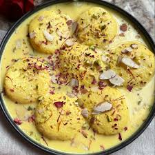

Gulab Jamun
.jpeg)
Ingredients
- 1 cup milk powder
- 1/4 cup all-purpose flour (maida)
- 1/4 tsp baking soda
- 2 tbsp ghee (clarified butter)
Recipe:-
To prepare Gulab Jamun, start by mixing khoya, maida, and baking powder in a bowl. Knead the mixture into a soft, smooth dough using milk. Divide the dough into small portions and shape them into smooth, crack-free balls. Heat ghee or oil in a deep pan over low heat and fry the balls until golden brown, stirring gently to ensure even cooking. In a separate pan, make sugar syrup by boiling sugar, water, and cardamom pods until slightly thickened. Add rose water for aroma if desired. Soak the fried jamuns in warm syrup for at least 2 hours before serving.
Ras Malai
Ingredients
- 1 liter full-fat milk
- 1-2 tbsp lemon juice or vinegar
- 1/4 cup sugar
- 2-3 cups water
Recipe:-
To make Ras Malai, first prepare the chenna (paneer) by boiling milk and curdling it with lemon juice or vinegar. Strain the curds through a muslin cloth and press out excess water, then knead into a soft, smooth dough. Shape into small discs and boil them in sugar syrup (sugar and water) for 15-20 minutes. Meanwhile, prepare the rabri by boiling milk, sugar, and cardamom over low heat until it thickens slightly. Add chopped nuts like pistachios and almonds. Squeeze excess syrup from the discs and soak them in the rabri. Chill in the refrigerator before serving.
Chakli
.jpeg)
Ingredients
- 1 cup rice flour
- 1/4 cup gram flour (besan)
- 1/4 cup all-purpose flour (maida)
- 1 tsp sesame seeds
Recipe:-
To prepare Chakli, mix rice flour, gram flour (besan), sesame seeds, carom seeds (ajwain), red chili powder, turmeric, salt, and a pinch of asafoetida in a bowl. Heat a little butter or ghee and add it to the mixture, then knead into a soft dough using water. Fill the dough into a chakli press and shape spirals onto a greased plate or parchment paper. Heat oil in a deep pan and fry the chaklis on medium heat until golden brown and crispy. Drain on paper towels and let them cool completely before storing in an airtight container.